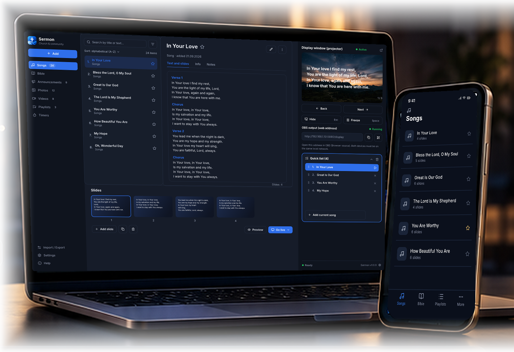
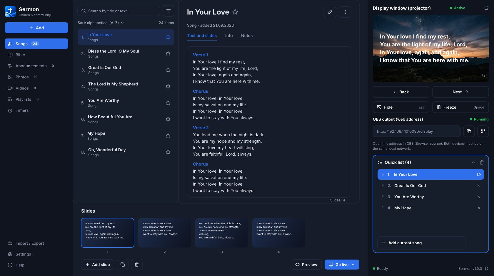
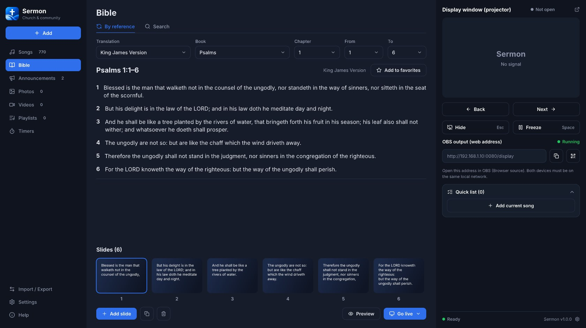
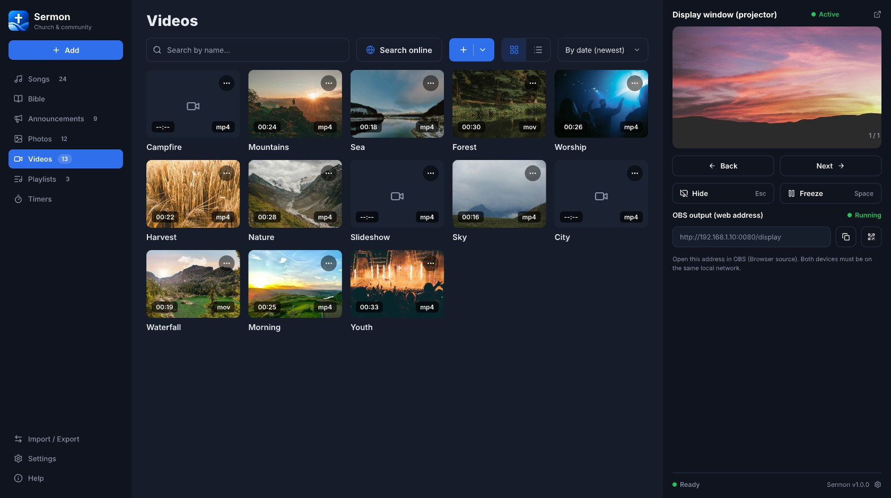
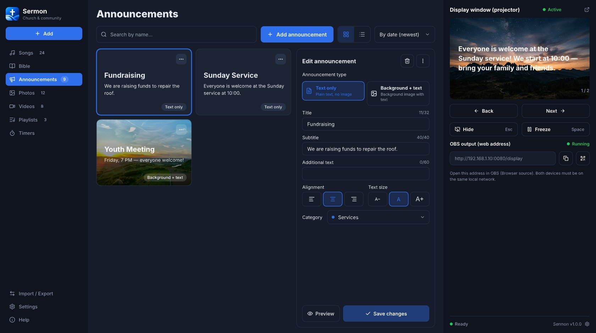
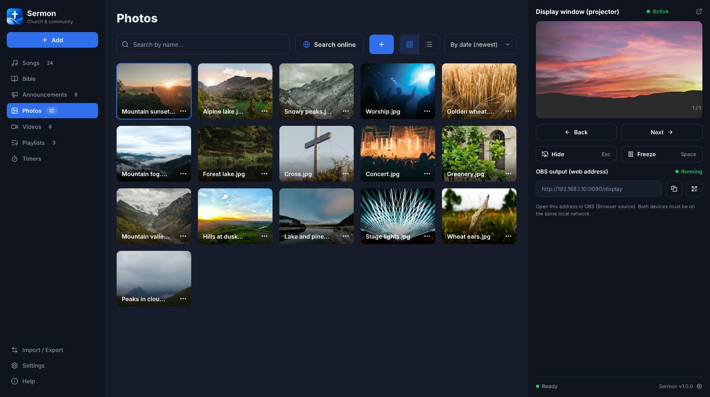
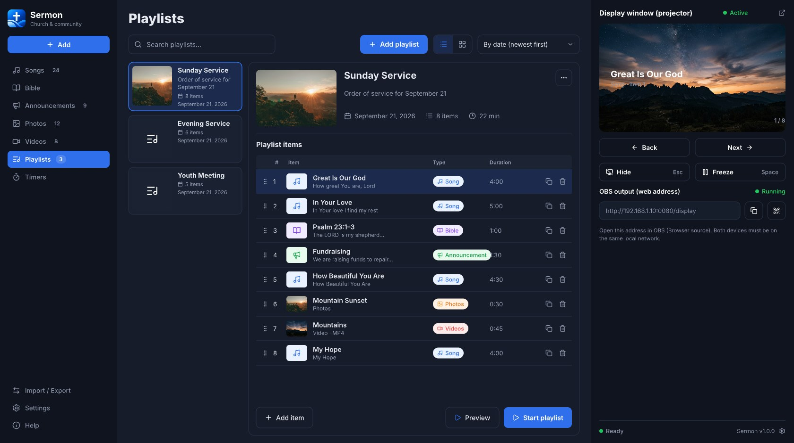
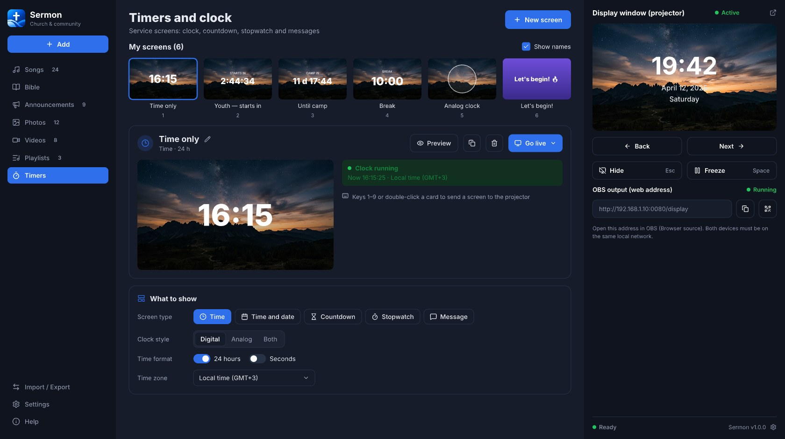
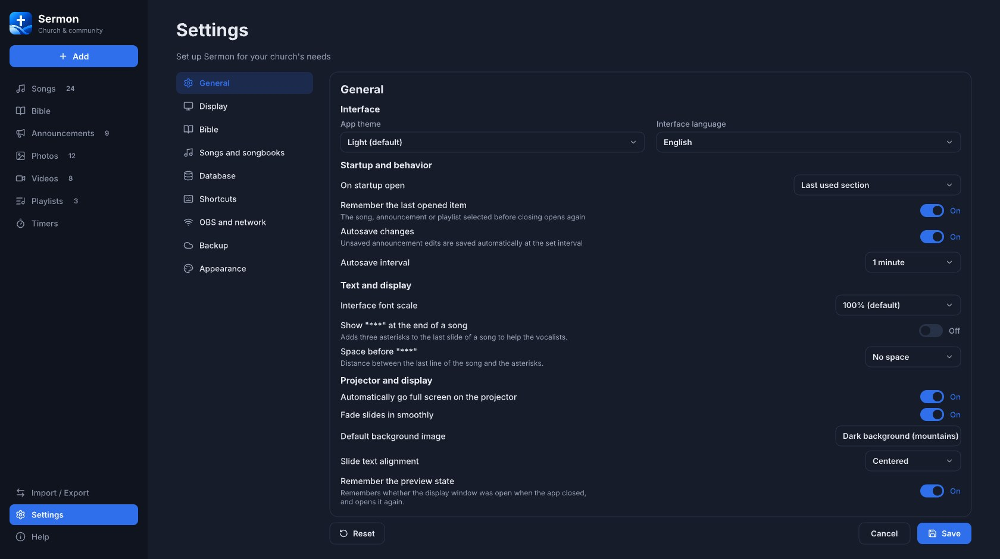

교회를 위한 프레젠테이션 프로그램
교회 프레젠테이션을
쉽게.
Sermon은 찬양, 성경 구절, 광고, 사진, 동영상, 재생 목록과 타이머를 화면과 방송에 띄우도록 돕습니다. 단순하고 현대적이며 예배를 위해 만들었습니다.
오프라인에서도 작동합니다. 완전 무료. 가입이 필요 없습니다.

찬양
가사를 쉽게 추가하고 표시
성경
구절을 빠르게 찾아 표시
광고
보기 좋은 광고 만들기
사진
사진과 배경 이미지 표시
동영상
예배 중 동영상 재생
재생 목록
예배 순서를 목록으로 정리
타이머
예배용 간단한 타이머
출력
화면과 방송으로 (OBS 지원)
아름답고 쉽게
Sermon 둘러보기
교회를 위해 만든 깔끔하고 현대적인 화면. 예배에 필요한 모든 것을 하나의 앱에서.

찬양 라이브러리
교회 찬양을 쉽게 추가하고 정리하며 슬라이드를 미리 봅니다.

성경 구절
여러 번역본에서 구절을 몇 초 만에 찾아 표시합니다.

영상 라이브러리
예배 중 영상과 움직이는 배경을 재생합니다.

광고
이미지와 글로 눈에 띄는 광고를 만듭니다.

사진과 배경
사진과 배경을 표시하거나 무료 이미지를 온라인에서 찾습니다.

재생 목록
찬양, 구절, 광고, 영상을 순서대로 — 예배 전체를 계획합니다.

타이머와 시계
카운트다운, 시계, 스톱워치, 화면 메시지.

나만의 설정
교회에 맞는 테마, 글꼴, 단축키, 표시 옵션.
시작할 준비가 되셨나요?
오늘부터 예배를
더 생동감 있게.
Sermon을 무료로 내려받아 교회를 위한 멋진 프레젠테이션을 만드세요. 가입이 필요 없습니다.